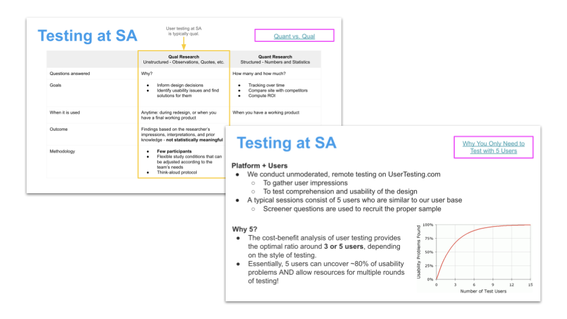

UX Course

Author & Stakeholders
Kyrsten G. (UX Researcher), Angie B. (Creative Director), Justin S. (Designer), and Bella Goldberg (Designer)
Summary
As a way to improve buy-in from the bottom up, I helped develop an 8-week UX course for the Product team. The course was inspired by Stanford d.school’s virtual crash course on Design Thinking with an added emphasis on relevant Design and UX principles and best practices. This course was developed in hopes that it would not only arm the Product team with valuable knowledge and resources, but also create advocates for UX within the organization.
I was able to recruit the efforts of our Designers to help me lead the weekly 10 - 15 minute sessions. All sessions focused on a key concept, which was introduced using a variety of methods such as educational videos, internal and external case studies, group activities, etc. This time was also used to remind the team of the current design and research processes within our organization.
Overall, the UX course was a hit with the team! The team shared that they thoroughly enjoyed these weekly sessions as they were fun and educational. The course also seemed to facilitate the creation of common ground among the team, where we were all finally using the same Design and UX language. In addition, several of my colleagues have ended up reaching out to me with questions and general interest in UX since the end of the course - success!
Next Steps
The UX team is currently in development of a series of UX workshops that will be most likely focus on design critiques and empathy map creation.